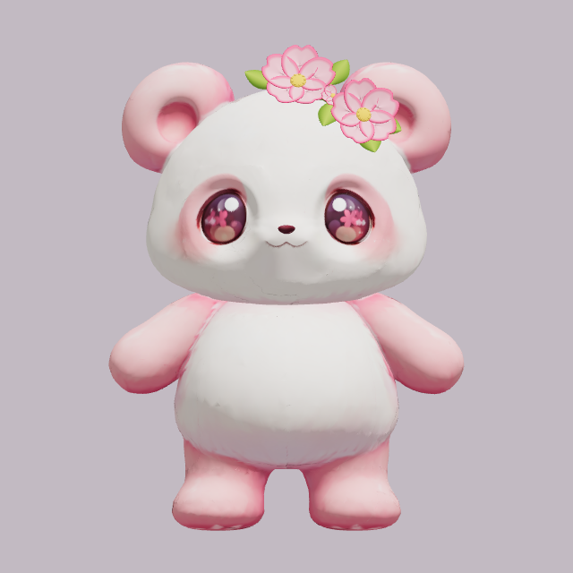
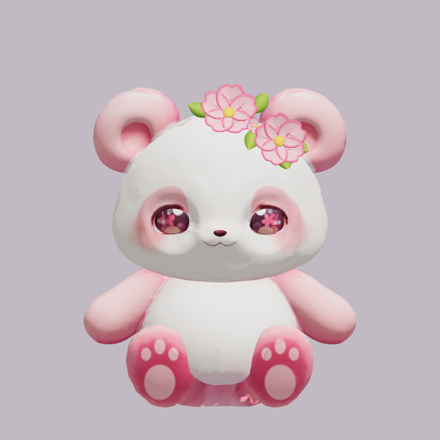
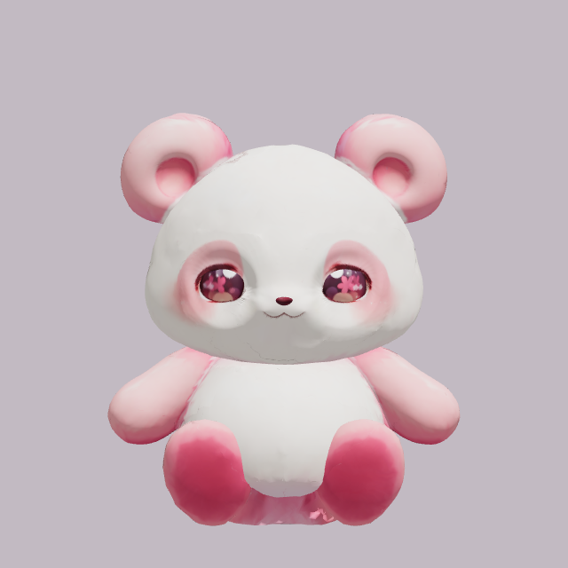

今回の追加装備：Human PENDING
既存v004比較ページのみHuman外観PASS。phone UNKNOWN。原本置換・Motion量産はHuman GOまでHOLD。
Review・再現 · 3D構造契約 · 一次出典 · 資産とhash · PC製品loaderで操作（標準装備ON） · 既存v004比較ページ
主花2輪＋間の小さな重なり＋5葉を1アイテムとして頭頂～右耳前に装備。肉球は左右後足裏に各「大中央1＋上側小3」。元の頭・耳・身体形状を変更せず、原本GLBと独立資産を実loaderで合成しています。


640×640。各経路内の撮影条件は固定、Blender authorと保存GLBは同じcamera/light。PCは実製品のPlayCanvas設定であり、rendererの照明・色変換差があります。画像クリックで原寸表示。
中立・座位・保持中間/極値・復帰は4方向。頭/耳/足上げの追加姿勢はFrontと右3Q。Anchor行列一致だけで外観を承認していません。
PC実frameend収録、f993–1149、右3Q、装備ON。診断clipによる確認であり量産Motionの承認ではありません。
精細化前の配置・投影確認。Human承認を示すものではありません。
14 Mesh保存検査 · 有限姿勢の花/葉とHead/耳の頂点近接検査 · 192 sample追従 · 解放 · 再読込比較